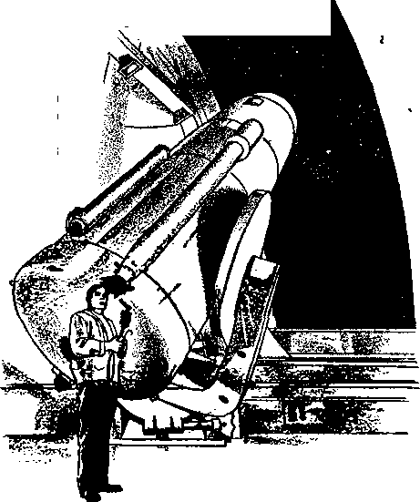

Science Discovers a Creator
Witnesses Fight for Freedom in Argentina
From Flaming Arrows to Talking Satellites
Land of the White Rajahs
AUGUST 8. 1958
The mission of this journal
News sources that are able to keep you awake to the vital issues of our times must be unfettered by censorship and selfish interests. "Awake!" has no fetters. It recognizes facts, faces facts, is free to publish facts. It is not bound by political ambitions or obligations; it Is unhampered by advertisers whose toes must not be trodden on; it is unprejudiced by traditional creeds. This journal keeps itself free that it may speak freely to you. But it does not abuse its freedom, ft maintains integrity to truth.
"Awake!" uses the regular news channels, but is not dependent on them. Its own correspondents are on all continents, in scores of nations. From the four corners of the earth their uncensored, on-the-scenes reports come to you through these columns. This journal's viewpoint is not narrow, but is international. It is read in many nations, in many languages, by persons of all ages. Through its pages many fields of knowledge pass in review—government, commerce', religion, history, geography, science, social conditions, natural wonders—why, its coverage is as broad as the earth ond as high as the heavens.
"Awake!" pledges itself to righteous principles, to exposing hidden foes and subtle dangers, to championing freedom for all, to comforting mourners and strengthening those disheartened by the failures of a delinquent world, reflecting sure hope for the establishment of a righteous New World.
Get acquainted with "Awake!" Keep awake by reading “Awake!”
PUBLISHED SEMIMONTHLY BY
WATCHTOWER BIBLE AND TRACT SOCIETY OF NEW YORK, INC. 117 Adams Street Brooklyn 1, N.Y., U.S.A.
N. H. Knorr. President Grant Buiraa, Secretary
Printing this issue 2,800,000
Five cents a copy
"Awake!" Is published In the following mini 19 Inngvsgis: Ssnlanathly—Afrikaani, Danish, Dntcti, English, Finnish, Fiunch, German, Greek, Italian. Japanese, Norwegian, Portuguese, Russian, Swedish, Tigalof.
Monthly—Chinyanja, Indonesian, Ukrainian. Zulu.
Yearly subscription rate 40¢ fof semimonthly editions
America, U.S., HT Adams St., Brooklyn 1, N.Y. *1 Mrtralli, 11 Beresford fitrathfldd, N.S.W. «/-GanalBt ISO BridseUnd Aft, Toronto IB, OnL >1 Enflind, Craven Terrace, London ff. 2 7/-
M Zulari, 621 New North Rd., Auckland. H.W.L 7/-SMtk Afrlea, Private Bag, Elandstonuln, Tri, 7/-
Mail checks or drafts at half the above rates.
Remittances for subscriptions should be sent to the office In your country. Otherwise send your remittance to Brooklyn, Notice of expiration la sent at least two months before subscription expires.
CHANGES of ADDRESS should be made at thirty days befire yur wiring data. Give both old and new address (If p«»lbl«. year all address libel). Write Watchtower, 117 Adams Stnit. Brooklyn 1. New York, U.S.A.
Entered u second-elUB matter at Brooklyn, N. Y. Printed in U.S.A
The Bible Students in “Awake!” Ii tki Ki< War 14 Tradition at IM Halt Sirlptiru. With other translations in and for full in, will be taking the editions;
AS - American Wtrfard Veralmj AT - Afi American treaalatloa ,4V - Authorized Version (1611) Darby - J. N. Darby version
Douay — Catholic Douay version AS — The Emphatic Diaglott JP - Jewish Publication Hoe. Lb - Ismp Leaser'! veraJon
JB — James Moffatt's version Rotherham - J. B. Rotherham's version AS — Revised Standard Version Yg - Robert Yeung's reraAon
CONTENTS
Witnesses Fight for Freedom in
From Flaming Arrows to Talking
Blind Woman Sees Light by Photocell 16
Misrepresented Everywhere Arranging Cut Flowers for Your Home Land of the White Rajahs Tranquilizers Better for Plants?
Disaster in Arequlpa
“Your Word Is Truth”
The Bible’s Case Against “Faith Healing”
Jehovah’s Witnesses Preach in All the Earth—Thailand
Watching the World
Volume XXXIX
Brooklyn, N.Y., August 8, 1958
Number 16
is it FAITH
or FASHION?
Could it be that much churchgoing today is not so much faith as fashion? Some recent statements underscore the foundation of the so-called religious revival in America.
Before taking a close-up view of the American religious scene, let us look at a snapshot taken at a long distance—an appraisal of the situation by Britain’s Manchester Guardian Weekly. "The fear of being thought different, odd or eccentric is a mounting one in the United States,” said the Guardian of September 19, 1957, “and the subtle whisper has gone round that ‘religion* is something you must not miss.”
Continually we are hearing the words “conformity,” “respectability” and "social phenomenon” in regard to the American religious revival. Reporting on the words of priest Robert Welch, the New York Times of July 10, 1957, said: “The so-called religious revival in the United States was termed partly illusory yesterday by a Roman Catholic priest. He said that in many cases it had become a ‘form of respectability’ and was really social phenomenon rather than a true return to religious precepts.”
The social phenomenon is simply this: people are going to church because their neighbors are, because it is the popular thing to do, because it is helpful to one’s reputation, because social conformity has become a powerful force in American life. Thus at a seminar of alumnae at Smith College, Northampton, Massachusetts, recently, a professor of religion brought up this subject. “A tendency to avoid deviation from the norm,” said the New York Times report, “is one of the reasons why churches and religious services are so crowded, Robert Gesser, Assistant Professor of Religion, told another session.”
This particular reason for the religious revival is looming up as more significant than is usually realized. “There is a tendency,” says Sidney H. Scheuer of the American Ethical Union, “to regard all people who are not committed to one of the three great faiths as being disloyal to American principles and traditions.”
Has it become un-American not to be religious? Observers feel that this is the trend. Though it may be hardly noticeable in big cities such as New York, it is conspicuous in suburbia. Will Herberg, who has made one of the most thorough studies of American religiosity, writes in his noted work Protestant—Catholic—Jew:
"A pattern of religious conformism develops, most pronounced, perhaps, among the younger, ‘modern-minded* inhabitants of Suburbia, but rapidly spreading to all sections of the American people. The picture that emerges is one in which religion is accepted as a normal par? of the American Way of Life. Not to be—that is, not to identify oneself and be identified as— either a Protestant, a Catholic, or a Jew is somehow not to be an American. It may imply being foreign, as in the case when one professes oneself a Buddhist.”
Will Herberg points to the increasing trend in America to other-direction; that is, being directed by others, conforming to the ways and wishes of others, especially one’s neighbors. “It is not difficult to see,” he writes, “the current turn to religion and the church as, in part at least, a reflection of the growing other-directedness of our middle-class culture. The people in the suburbs want to feel psychologically secure, adjusted, at home in their environment. . . , Being religious and joining a church is, under contemporary American conditions, a fundamental way of ‘adjusting’ and ‘belonging’; through the built-in radar apparatus of other-direction it becomes almost automatic as an obvious social requirement, like entertainment or culture.... Religion is valued as conferring a sense of sociability and ‘belonging,’ a sense of being really and truly of the world and society.”
Going to church for reasons of respectability, sociability and conformity results in an empty kind of religion. Will Herberg calls it “religiousness without religion.”
“It is only too evident that the religiousness characteristic of America today,” explains Herberg, “is very often a religiousness without religion, a religiousness with almost any kind of content or none, a way of sociability or 'belonging* rather than a way of reorienting life to God. It is thus frequently a religiousness without serious commitment, without real inner conviction.”
No wonder religion has not become a power in the lives of the teeming churchgoers! No wonder the crime rate soars despite overflowing churches! No wonder the so-called religious revival is, as so many clergymen themselves have implied, shallow and lacking the depth of genuine conviction! It is more fashion than faith.
"A Race Without Rules"
< In the January 19,1958, issue of The American Weekly Andrew G. Haley, general counsel of the American Rocket Society, writes about the race for control of outer space: “If the Russians get to the moon first, they can claim it. If we get there first, we can. This is my opinion. If Russia should announce it Intended to take possession of the moon, it probably would do three things: Send a rocket to plant the Red Star on the moon's surface; send a two- or three-man rocket around the moon, claiming the reverse side by virtue of discovery and mapping; land a small colony on the moon. If these steps were taken, Russia would have very valid claims of sovereignty to assert in any appropriate world judicial tribunal. . . . Plans for taking these steps are under way In Russia. Russian scientists have disclosed them. ‘Ballistic flight to the moon will follow the launching of the huge earth satellite,' one of Russia’s physicists, Prof. V. V. Dobronravoy, announced. ‘Step by atep,’ Russia’s advance into space is planned, according to Prof. Kirill Stanyukovich of the Baumann Institute of Technology in Moscow. ‘First the earth satellite, then a rocket to the moon, then a rocket to Mars.’ The moon race between the U.S. and the U.S.S.R. is on, and the Mars race will follow. Just now it is a race without rules.”
Science discovers a
CREATOR
Science does not brush aside the idea of a creator with the gli bne u th a t popu la rizeri of science would have ut believe.
0OMEHOW the idea has gained widespread acceptance that science has discovered facts that make belief in a Creator impossible. How did this come about? It may stem from the fact that some of the atheistic and agnostic scientists have been exceptionally vocal in expressing their views. Actually, many of the most eminent scientists, certainly more than is generally supposed, have expressed themselves to the effect that science has discovered a Creator.
"I think the widespread impression of the agnosticism of scientific men,” explains Dr. Macalister, professor of anatomy at Cambridge, “is largely due to the attitude taken up by a few of the great popularizers of science, like Tyndall and Huxley.”
Thus the scientist has not generally been looked upon as a believer in a Creator. To find out what scientists believed, a questionnaire was sent, some years ago, to the most prominent British scientists. These scientists were members of the Fellowship of the Royal
Society, the British Hallmark of scientific quality.
, Two hundred of these scientists responded. In answer to the question, “Does science negative the idea of a personal God as taught by Jesus Christ?” twetit;
six scientists answered in the sense that it did; seventy-one gave vague answers, but the majority— 103—answered that science does not negative this idea.
Interestingly, several
of the scientists, in answering, disclaimed any idea that they were pre-eminently qualified to speak on the subject of religion and God. “The fact that I am a professor of chemistry,” answered one scientist, “does not enable me to express a more, or a less, authoritative opinion on any other subject, religion, politics, and so on, than any non-scientific yet reasonably educated man or woman,”
Whatever weight one chooses to place on the statements of scientists, the fact becomes clear that positive statements are numerous, much more so than commonly believed. They are not usually publicized, however, in the somewhat sensational way as are some of the statements by agnostics.
It is noteworthy that positive statements by past presidents of the Royal Society are not scarce. One of them, Lord Rayleigh, discoverer of the element argon, said: “In my opinion true science and true religion neither are nor could be opposed,” Another president, physicist Lord Kelvin, said: “I have many times in my published writings within the past fifty years expressed myself decidedly on purely scientific grounds, against atheistic and materialistic doctrines. ... I believe that the more thoroughly science is studied the further does if fake us rrom anything compared to ameism/
American astronomer Charles Augustus Young, professor at Dartmouth and latex at Princeton, made this expression: "I think it is unquestionable that, as men have come to know more of the material universe, they have had continually revealed to them something more of the glory and majesty of its Creator.”
Physicist Arthur Holly Compton, a. .No-Del prize winner, made this statement1 ‘For myself faith begins with the realization that a supreme intelligence brought the universe into being and created man. It is not difficult for me to have this faith, for it is incontrovertible that where there is a plan there is intelligence—an orderly, unfolding universe testifies to the truth of the most majestic statement ever uttered —‘In the beginning God’!”
Nobel prize-winning physicist Robert A. Millikan has stated: “A purely materialistic philosophy is to me the height of unintelligence. Wise men in all the ages have always seen enough to make them reverent.”
With the dawning of the nuclear age some of the greatest brains in science have indeed expressed themselves as being far from atheism. They have. probed far enough into the miracle of the universe and read enough from the book of nature to convince them that the marvelous cosmos did not evolve by chance. Sir James Jeans, one of the most famous physicists in modern times, said: "The Universe shows evidence of a designing or controlling power ... a universal mind of which your mind and mine ... are units or even excrescences.”
Dr. Gustav Stromberg, member of the Mount Wilson Observatory staff at Pasadena, is widely known in the fields of astronomy, astrophysics and mathematics. What have his studies of the movements and magnitude of giant stars, the charting of solar motion and kindred subjects taught him? 'The present study." reports Dr. Stromberg, “leads to the inevitable conclusion that there exists a World Soul mt God.” And British astronomer Sir Arthur Eddington recently announced: "The idea of Universal Mind or Logos would be, I think, a fairly plausible inference from the present state of scientific theory; at least it is in harmony with it.”
Innumerable other positive expressions have been made by noted scientific minds. such as that by Dr. Albert Einstein; “It is enough for me to contemplate the mystery of conscious life perpetuating itself through all eternity; to reflect upon the marvelous structure of the universe, which we can dimly perceive, and to try humbly to comprehend even an infinitesimal part of the intelligence manifest in nature.”
Just as electricity or radio waves are proved to exist by the-power they exert, so many scientists are coming to realize that God’s existence is just as reasonably proved, even more so, by the evidence of his power at work. “We have seen the Universe being referred to as a manifestation of a designing power, of an allembracing thinking force, of Universal Mind, or Logos, as the work of a Great Architect of the Universe. Now, for the first time, we hear the word God in con-
nection with it,” observes philosopher Edward J. Bing. “Those who prefer to believe in a personal God, distinct from the Cosmos, will find it quite compatible with their convictions to look upon Universal Mind, i.e., upon the Cosmos, as the manifestation, the active principle, the dynamics, of the God-head.”
Some diehards demand that God perform an ostentatious miracle to prove his Existence, But what is a miracle? A mft acle is something that happens in the natural order of things, but we cannot .fully explain it. That being true, do we not live in a universe of constant miracles? Who or what keeps the sun rising and setting every day? Scientists cannot really explain, so sunrise and sunset are miracles.
“Miracles are so called because they excite wonder,” once said American philoso pher George Santayana. “In unphilosophi-cal minds any rare or unexpected thing excites wonder, while in philosophical minds the familiar excites wonder also, and the laws or nature, n we aamu sucn laws, excite more, wonder than the detached events. . . , The order of the solar system excites it every night in the astronomer. Astrohomy explains the sunrise, but what shall explain the solar system? The universe, which would explain everything, is the greatest of wonders, and a perpetual miracle.”
How could God produce more reasonable, more believablp evidence of his existence? “What may be known about God is manifest among them, for God made it manifest to them,” said the Christian apostle Paul of the pagan Romans. “For his invisible qualities are clearly seen from the world’s creation onward, because they are understood by the things made, even his eternal power and Godship, so that they are inexcusable.”—Rom. 1:19, 20.
The discovery by an increasing number of scientists that the cosmos did not happen by chance, did not come about by a blind, unguided, chemical progression of evolution, but is designed, created, and controlled by a Supreme Intelligence, is what Dr. Bing calls a “Scientific Reformation.”
“What is this?” he exclaims. “What has come over the leading physicists of our generation? What has happened to scientific thought? A revolution- That revolution has remained practically unnoticed., fet, it is many tunes greater, and liable to be more far-reaching in its effects, than the French Revolution. ... It is no exaggeration to say that in cultural significance this spiritual revolution is paralleled only by the Reformation. Four hundred years after the Religious Reformation, in fact, we are-witnessing the birth of the Scientific Reformation,”
But who is the God whom many scientists have discovered? Is he a mere Universal Intelligence? Is he nameless? To what can the scientists turn to learn the identity of the Creator they have discovered? What revelation, beyond the book of nature, has he given of himself?
Writing in Modern Science and Christian Faith, Roger J. Voskuil, professor of Chemistry and dean of Wheaton College, Wheaton, Illinois, says: “As a scientist, it is more reasonable tor me to believe in a Creator than in an eternally existing cosmos. . . . One cannot rightly know God from the natural world alone. The scientist may work for an eternity, but he will never come to know God and all His attributes. ... Man is but a creature of a Creator; therefore, man cannot learn about. God bY_investigation of His creation alone, but he needs a special revelation. That special revelation is God’s Word, which has been given in the Scriptures.”
AUQUST 8, 1958
So the scientists must turn to God’s Book, the Holy Bible, if they are to know the Creator personally. Nature does not name her Creator. She only submits circumstantial evidence that he exists. True, “the heavens are declaring the glory of God, and of the work of his hands the expanse is telling. One day after another day causes speech to bubble forth, and one night after another night shows forth knowledge.” But nature’s speech is inarticulate; nature’s knowledge is mute. "There is no speech and there are no words; no voice on their part is being heard,” says Psalm 19:1-3.
The scientist, then, needs to go beyond the book of nature. Even the book of nature is not the most convincing reason for belief in God. The most convincing evidence is the literal Book God has produced. That Book contains his law, his instructions for the human family. It reveals that shortly following man’s creation a rebellion broke out, but this rebellion will be resolved and members of the human family will be reinstated in good standing with their Creator. From the Bible man may know the Creator in the majesty of his power, his wisdom, his justice, his love. God’s Word, more than nature’s inarticulate speech, proves to be the prime builder of faith.
But, above all, the true and living God remains an unknown God to the scientists unless they come to know him through his Book, the Bible. For it is this Book that discloses the identity of the Creator, giving us his personal name.
If the scientist can read/iamuan jhe will. find God's name Jehovah in me truth. If he can reaa Mohawk he will find it Yehovah But in many English versions of the Bible he will find the English approximations Yahweh or Jehovah deleted in their nearly 7,000 occurrences in the original Bible language and replaced by "God,” “Lord” or similar titles. Should modem scholars remove the authorship of Shakespeare, Milton and Herodotus from their works, theologians would cry shame! They are not ashamed, however, of robbing God of the personal authorship of his own Book.
Though worldly religionists have obscured the true God’s personal identity, the scientists can find God’s true name in such Bible translations as Rotherham’s, Darby’s and the American Standard Version. The King James Version contains God’s personal name in such scriptures as Exodus 6:3, Isaiah 12:2 and in Psalm 83: 18: “That men may know that thou, whose name alone is JEHOVAH, art the most high over all the earth.”
Of modern English translations the New World Translation will be of outstanding aid in enabling one to know the true God,. Jehovah. This translation has restored the divine name, enabling all persons to know the Creator’s personal identity.
Though the scientist has discovered reasons for belief in the Creator, he cannot know the Creator unless he learns God’s own identity and explanation of Himself in his own Word. Worldly religionists, by their obscuring God’s name, by their many false religious doctrines and unchristian acts, have repelled many scientists.
Scientists have discovered in the book of nature the handiwork of the Creator. Now whv not look into the Book of Life and meet the Creator in a personal way? If the book of nature will stand the scrutiny of the scientist, the Book of Life will stand it even more! "The sayings of Jehovah are pure sayings, as silver refined in a smelting furnace of earth, clarified seven times.”—Ps. 12:6.
WITH ISSUES
was just noon when some six hun-ired Christian ministers returning from their morning preaching service to God were getting ready for their meal during the first day of an assembly scheduled to last four days. Several police officers walked in and announced that the meeting was closed, detaining four ministers. Where did such a thing happen? In some uncivilized or totalitarian country? No. It happened in Buenos Aires city, the capital of Argentina, on December 19,1957, where some three thousand of Jehovah’s witnesses were to gather to hold a district assembly.
Several months before that, representatives of the Watch Tower Bible and Tract Society had contacted the concessionaries of Les Ambassadeurs, a large hall used mainly for banquets, drawing up a contract for the use of this hall for their projected assembly. Les Ambassadeurs is a registered hall for public meetings; so it is the duty of the owners to notify the municipality of the city of Buenos Aires of all the meetings to be held there one month ahead of the date, and they, in turn, inform the police.
If everything is in order no answer is given and the permit is considered granted.
y stamp on their register the denial of the permit to hold a determined meeting. No
EE
F’ However, if permit Is denied, then an officer of the municipality is sup-y posed to notify the hall’s owners and tice came from the municipality, thus indicating that everything was in order, and the assembly started promptly at 9 a.m., with Jehovah’s witnesses gathering to consider their daily scripture and receive Scriptural counsel for their service to God that morning. After a prayer they left for their service.
That was to be their last meeting for that assembly. The reason the police gave to stop the meeting was that no permit had been requested or granted; but such was not the case, for it had been filed with the municipality on November 20, under number 4,836. Although these details were given to the police, they were of no avail and four of the ministers were held under arrest.
An attempt was made immediately to establish contact with the minister of the interior (on whom the police depend), but he was not in the city. His secretary could do nothing, since the order to stop the meeting had come from the Ministry of Foreign Affairs and Worship.
The next step was to see the minister of the navy, acting as foreign minister. He was unable to do anything; the Registry of Cults did not recognize us.
'WE MUST OBEY GOD RATHER THAN MEN.’
What is the Registry of Cults, that it has the authority to overrule the constitution of the country? A little history will help us.
The last constitutional government the country had was overthrown by a revolution in 1946, and in May of that same year the revolutionary government issued a decree stating that all non-CathoJic religions had to register with the government to be able to operate in the country, “without this meaning, in any sense, restriction of the freedom of its practices.” However, Congress was not satisfied with this declaration and due to “reasons of a Constitutional nature” did not approve the decree and the Registry of Cults was dissolved.
Soon the dictator Perdn was fully established in the government with the undivided backing of the Catholic Church then, and by October, 1948, he had again decreed the reorganization of the Registry of Cults with no Congress to hinder his movement. The new decree, however, contained no statement that it would not restrict freedom of worship. Jehovah’s witnesses duly registered and complied with all the requirements. They soon found out why the government was so interested in knowing where all the halls and meeting places were situated. It was so that when they were denied inscription in the Registry and denied their right of worship, the police could close down all their registered halls.
That took place in 1950. A lawsuit was started then to regain freedom of worship, but it has been delayed all along, so that yet there is no answer to it. The dictatorship was overthrown in 1955 by the very ones who were previously its close friends, the church. Many were the promises of freedom of press, word and worship, but these never materialized with Jehovah’s witnesses. A petition was presented to the new government that the restrictions against them be lifted, but to date, almost two years later, no answer has been given nor reason for the silence.
The attitude of Jehovah’s witnesses has been like that of Peter and John: “Whether it is righteous in the sight of God to listen to you rather than to God, make your decision. But as for us, we cannot stop speaking about the things we have seen and heard." “We must obey God as ruler rather than men.” (Acts 4:19, 20; 5: 29) They have continued preaching and gathering together to worship Jehovah God.
In many different cities the police have been very understanding and helpful, much to the wrath of the clergy, who finally vented their feelings in the church magazine Criterio of January 12, 1956 (after the Liberating Revolution had overthrown Penin’s government'), stating:
“The Catholic doctrine with regard to tolerance maintains a just balance between extremes of unusual rigor and indifferent disregard, which in a religious unit such as ours obliges us to defend it even more energetically. This never means violently, and much less denies anybody the practice of his cult. There may be cases, perhaps, in which it will demand the intervention of the State in the case of the preaching of doctrines such as that practiced by Jehovah’s Witnesses, already working among us. But, generally speaking, let us Catholics seek how to defend ourselves and defend our brothers. The Constitution, laws, and tradition give Catholicism a privileged role that the great religions of our country should recognize openly and respect, considering Argentina as a nation with a religious patrimony in which they do not interfere and which they do not oppose. The sects do not proceed this way, and work very actively in different ways.”
The Registry of Cults in itself would have no power to close down meetings were it not for another provision of past governments that was still in force, the Public Meetings Edict, which gave the police full authority to control, authorize and supervise all kinds of meetings, including religious meetings that are not the regularly held ones at their own authorized temples. However, just before the assembly, the chief of the federal police had issued a statement, which said: “On the contrary, in the cases where it is intended to hold acts which are not the normal, dally ones of the cult, it is the orderly thing that permit be previously requested as provided in the edict oh the matter.” But to request that permit, the religious organization has to be registered with the Registry of Cults, thus making it legally impossible for Jehovah's witnesses to worship God and to exercise their right to “freely practice their cult,” as the constitution so liberally provides, but that has so effectively been trampled underfoot by “framing trouble by decree,” and upholding two of those very principles which were claimed to be overthrown by the revolution of 1955.—Ps. 94:20.
With the arrest of the four ministers came the decision of the chief of police, fining them and prohibiting them to meet again in similar meetings for a period of one year. This was such a flagrant violation of the constitution that an appeal was made to the tribunals. Hearing was granted iand the Society’s counsel, Dr. Adolfo E. Parry, presented a strong argument with good legal backing, showing how religious freedom was being denied the Argentine people due to the upholding of those two decrees issued by former governments.
Judgment was handed down on March 14, 1958, declaring eight of the twenty-three articles of the Public Meetings Edict, those which gave the police power to authorize or stop meetings, null and void and no longer applicable due to their unconstitutionality, thus declaring our brothers innocent and entirely absolved, and giving the people of Argentina a degree of freedom they had not enjoyed in many years.
However, for the reason that in no way could further study and measures better the situation of those who had been prosecuted, the court did not consider it necessary to express itself on the matter of the Registry of Cults, whose constitutionality had also been questioned. This oppressive instrument still continues to exist by virtue of the strong and strangling grip of the Catholic religion upon the country, thus denying the people of Argentina the right to worship God according to the dictates of his Word and one’s conscience.
One major victory has been won, but the fight for freedom is far from finished. Jehovah’s witnesses in Argentina are continuing to press on, knowing, however, that only ‘truth can make one free’ and that the greatest possible freedom for mankind will be attained only under Jehovah God’s kingdom through his Son Jesus Christ in the near future.
£xc^usii/e QVotefiip
In 1906 philosopher William James wrote in a letter to H. G. Wells: “The moral flabbiness born of the exclusive worship of . . . success. That—with the squalid cash interpretation put on the word success—is our national disease.”
TODAY'S standards of communication are a far cry indeed from the primitive methods used by men of early times. For thousands of years men have wished for a rapid communications system, but have never quite reached their expectations. In fact, as late as the seventeenth century the fastest methods of communication known were horses, sailboats and pigeons. It was not until men harnessed electricity that communications took a giant leap forward. Before that, however, communications seemingly inched along at a snail’s pace.
Fourteen centuries before Christ instruments of communication were trumpets, burnished shields and polished javelins. It was the blast from “seven ram’s horn trumpets’’ that sounded the fall of Jericho, Puffs or columns of smoke at day and fires at night were other means of conveying messages. These methods were used by the American Indian, and are still used by the aborigines of Australia and by jungle tribesmen. The ancients waved torches or shot flaming arrows into the air to warn of danger or to announce victory. Today men shoot rockets and sound sirens for the same purpose.—Josh. 6:4; 8:18-21.
In Europe announcements of invasions or victories were made by lighted beacons. Beacon lights warned the English that the Spaniards were coming the night of July 19, 1588. In Scotland, a hundred years earlier (1483), the following order was issued: “One bale or faggot shall be the notice of the approach of the English in any manner: two bales that they are coming indeed: and four bales blazing beside each other to say that they are coming in earnest.’’ Today the civil defense authorities use as a signa] a three-minute glis-sando of sirens to warn of the enemy’s approach and tell civilians to scurry for cover.
Drums, tom-toms, signal flags and cannon blasts have all been used for centuries in very much the same manner as they are employed today. Ships have long used an international system of signal flags to exchange messages. Weather bureaus and missile-launching centers have put up flags to warn the public, while lighthouses, railway companies and traffic departments have used lights for the same purpose. Fog and automobile horns, train whistles and other sound devices are all systems of communication, but they are all limited by the range of sight or the hearing of man.
Men have always wanted their messages to travel fast. The ancient Israelites, Persians, Greeks, Romans and Aztecs used relay runners. One of Alexander the Great's runners covered a distance of sixty miles in nine hours. Another runner is said to have traveled a distance of 125 miles in a single day! The longest run recorded was a distance of 150 miles in a day and a night. In India in the sixteenth century the messengers of Akbar are said to have run eighty to ninety miles in twenty-four hours as a regular task. Runners with special messages often ran the distance. The news of Absalom’s death was brought to King David by a runner. If a runner betrayed secret information he either paid with his life or had his tongue cut out.—2 Sam. 18:24-33.
In Persia, after a time, wooden towers were erected and the human voice was relayed. Men with very loud and shrill voices were used to shout messages from tower to tower. In the days of Julius Caesar shouted messages covered as much as 150 miles in a few hours. In the fifteenth century the Spanish invaders of South America also used this bellowing method. In addition, they devised a system of codes and signals that consisted of a number of strings and knots. Each cord and each knot conveyed a thought or an idea. Sometimes the knots were used simply to help the messenger recall what he had committed to memory, like the knots some people tie in their handkerchiefs, or like the string they tie to their finger.
In the days of George Washington semaphore towers were built. These towers also stretched across hundreds of miles in France and England, as well as the United States. Signals were given by lanterns, flags and oscillating arms. Still none of these systems were wholly satisfactory. They were far too slow and inadequate. There were confidential messages and parcels to be sent, but how? The task seemed insurmountable.
The Chinese, it appears, were the first to think of using the horse to solve this problem. Soon thereafter other nations followed suit. Horses with their riders were seen galloping across nations with their precious cargo. A relay system was formed, a prelude to the pony express system. Even mules, camels and young dromedaries were called into action. The Bible tells us that in Queen Esther’s day written documents were sent "by the hand of the couriers on horses, riding post horses used in the royal service, sons of speedy mares.” —Esther 8:10,
However, riders were often intercepted by robbers or by spies of enemy nations. Both horses and men often collapsed from the strain. If only there were a way to send messages through the air, thought men. There was a way! Again it appears that the Chinese came up with the answer— the carrier pigeon. A secret message was rolled in a little cylinder and attached to the middle tail feather and away the message went by air. To frighten off birds of prey, bells or whistles were attached to the bird. The huge fortune of the Rothschilds is said to have been made in part through the information they obtained by use of carrier pigeons.
In 1267 a man by the name of Roger Bacon began to tinker with electricity for communications. However, he was arrested and charged with meddling in black magic and was thrown in jail for twenty years. It was not until some four hundred years later that an electricity-producing machine was made. Otto von Guericke made this machine, which consisted primarily of a sulphur ball that he charged by rubbing his hands on it, in the same way we may charge our bodies by rubbing our feet on a thick carpet or rug. In 1726 it was discovered that electricity could be conveyed by a metal conductor, and a few years later electricity was sent through 800 feet of wire. Thus the basic principle of telegraphy was established.
Samuel Morse developed the telegraph. The simple principle behind its invention is interesting as the forerunner of both the telephone and the radio. By use of an electromagnet and a small finger lever called a key, short and long clicks could be sent over great distances by wire. This meant messages could be sent in code, then deciphered. A code was worked out that bears its inventor’s name, Morse.
It was while experimenting with a device to transmit simultaneously six messages over the same line that a phonetic instructor, Alexander Graham Bell, discovered (June, 1875) the key to transmitting electrically a voice instead of a noise. To understand the principle, look at your telephone. Behind the mouthpiece is a metal diaphragm that vibrates when you speak. When you lift the receiver your line is connected. The vibration as you speak affects or alternately compresses and expands the carbon particles in the contacting box. The change in the current caused by the change in the density of the carbon particles is in turn translated back into vibrations by the alternate strengthening and weakening of an electromagnetic puli on a receiver diaphragm, and thus your words are reproduced.
Thereafter the Bell Telephone and Western Union grew up together. One day in October, 1876, Bell bought a copy of the New York Tribune. On the editorial page was an article on the telephone. He stopped a moment to read it: “Of what use is such an invention? Well, there may be occasions of state when it is necessary for officials who are far apart to talk with each other, without the interferences of an operator. Or some lover may wish to pop the question directly into the ear of a lady and hear for himself her reply, though miles away; it is not for us to guess how courtships will be conducted in the twentieth century. It is said that the human voice has been conveyed by this contrivance over a circuit of sixty miles. Music can be readily transmitted. Think of serenading by telegraph!”
When Bell tried to sell his invention to the Western Union Telegraph Company they would not have it. They did not even want him to demonstrate it. We have no use for “an electrical toy,” they said. Bell was asking $100,000 for his invention. Two years later, 1879, the Western Union would have gladly given $25,000,000 for the “toy.” Just think, Where would the world be today without the telephone?
Just as telegraphy was the forerunner of the telephone, radiotelegraphy, dots and dashes, was the forerunner of many phases of modem radio. Thus there has been considerable overlapping in their development. Today by radiotelephone links are established to automobiles, trains, ships, airplanes and countries overseas.
After World War I communications made great strides forward. The microphone made its appearance, radio Was perfected and then came television. Sending television images from one place to another by both wire and radio is an accomplished fact today. Other newcomers have crowded the —Ci communications list. There is the teletypewriter that transmits typewritten messages from one point to another, distance being no barrier. Another addition is the teletypesetter, which makes it possible to set type for
newspaper or other publication use speedily and from a distance. Facsimile service is still another newcomer. This machine reproduces documents, drawings and maps at the distant end, and telephotograph service does the same for pictures. Wirephoto, or picture by wire, is now a thing of reality. And there is the “TV-Phone,” not fully developed yet, but it is well on its way. It is the future telephone that will fit in the palm of your hand and enable you not only to hear your party but to see him in color and 3-D.
The diversity of modem types of communication is truly enormous. Radio was employed for the development of radar, which is really a direction finder for enemy vessels, rockets and missiles. The working principle of radar Is that a ray, when it strikes the object sought, such as the moon, an airplane or missile, reflects or bounces back to the sender. Military instruments today depend heavily on electronics. Guided missiles are directed in flight by electronic controls and the missile in turn communicates its findings from outer space down to men on earth. Radio is used to direct pilotless planes and other objects to their destination. The walkie-talkie, the portable voice communication system for war field operations, is now used by firemen, policemen and big game hunters.
Satellites in outer space are radioing valuable information down to earth. Their future as a communication center appears limitless. There is a possibility of their being used in advertising, radioing messages down to earth. And since weather is the concern of all men, no doubt Mr. Satellite will come to be earth’s No. 1 weather forecaster. Flying high as satellites do, they can be used as relay stations for radio and television, sending programs from across the oceans, mountains and the distant parts of the world. The U.S. army missile and satellite expert, Dr. von Braun, says the satellite might become the mailman of the future. He described how a satellite would carry a radio receiver to pick up messages from below, a recorder to store them and a radio transmitter to send them back to earth. With this equipment a communications satellite could pick up messages over one city and release them over another. Or, it could send the message ahead to another satellite already over the city of destination. Dr. von Braun says that six satellites of the type he described could handle “all the official and civilian mail of the entire earth.” Sounds fantastic, doesn’t it? But so did the telegraph and the telephone appear foolish at one time.
We ordinarily think of communications as being a message sent from person to person. However, this is no longer necessarily true. Now, while lying in bed, you may press a button that turns on the heat, closes the window and starts an electric heating unit under the coffeepot. This is communication from man to machine. Now when the coffee is ready and begins to whistle, that is communication from machine to man, or from coffeepot to man. A thermostat in your room records the temperature. When the room gets too warm it turns off the oil burner, but if the room gets a little chilly it turns the burner on. That is communication between machines. It is quite possible today for a person to talk to a machine and for that machine to do the person’s work. It Is also true that a machine can talk to a person and for machines to communicate between themselves. This all might sound a little farfetched to some, but it should not, because they are everyday happenings today.
Communications are no longer traveling at the speed of the hoofs of horses, but messages move on the wings of lightning. Practically every branch of society and everything we do in life is being affected by modern communications. Our learning, our laws, our health and even literature and the arts are all in some way affected by the way we communicate. The bigness of the earth has now been squeezed by rapid communication to the size of a box that now finds itself in the corner of a living room. Peace and war are held in its grasp.
Rapid communication has become our way of life.
What would this world be without electricity and its family of gadgets, including those that form the communications system? It is fearful to contemplate. Still, when you consider what it is with all its marvels and gadgets, the thoughts are just as frightening and, perhaps, more so.
Man has come a long way since the day he sent up his first smoke signal or Hashed the light of his spear across the valley, but he still has a long way to go to match the finest form of communication—the human nervous system. This system transmits not only the sounds and sights but also the senses of touch, smell and taste. Let this accomplished fact keep man humble and cause him to praise its Maker, the author of communications, Jehovah God.
H, I see the light, I see the light!” g Uttering those words, thirty-five-year- g old Betty Corstorphine, blind for eighteen g years, detected flashes of light during a recent g test employing the use of wires in the brain g and a photocell serving as an eye. The idea g for the test was conceived by Dr. John C. g Button, Jr., a New Jersey osteopath. He had g become Interested in studies carried on at the Rochester State Hospital in Rochester, Minnesota. These studies mapped out areas of the S human brain associated with particular senses, g Dr. Button took his patient, a volunteer for g the test, to Los Angeles, where the operation g was performed by Dr, Tracy Putnam, director £ of neurosurgery at the Cedars of Lebanon = Hospital. Dr. Button’s idea was that the brain g cells in long-blind persons could be stimulated g electronically. zj
After the patient was given a local anesthetic thetic, two small holes were bored through her skull. Then two insulated wires, finer than human hair, were inserted into the middle of the brain behind the eyeballs. Attached to the wires was a transistor amplifier. It, in turn, was attached to a photocell. The photo
cell, capable of generating a weak electrical signal in response to light, was placed in the patient’s hand. When weak electric current was sent into the wires and a light in the darkened room was switched on, the patient exclaimed: “I see the light!” The doctors reported that she could also see whether the light was to her right or to her left.
The patient later said: “I saw flashes—at one time a bright flash like an electric light bulb and at another time a grayness as though a light had just gone out. ... I went out there knowing, of course, that I was not going to get my sight back. I knew it was only a test, that much more research will have to go into it. But someday—we’re hoping it’s soon—there may be vision aids for the blind like there are hearing aids."
The test was regarded as confirmatory of the belief that human brain cells, even though long unused, still do not waste away as do unused muscle cells. “I believe this is the first time that the brain has been stimulated to perceive light in a blind person,” said Dr. Button. “We have established that theoretically, at least, the blind can see.”
ty thousand downstairs? But take courage
—these are no ordinary worms! They are
first course is spread. What pleasant pre-
the aristocrats of the worm family. Their clean white skins indicate their pedigree; and, indeed, they are quite beautiful to look upon. Nor are they likely to abuse the hospitality of the home in which they find themselves. For their one and only preoccupation is an ocean of mulberry leaves.
Our introduction, of course, is to Lord and Lady Silkworm. Though called worms, they are really moth caterpillars. Now watch them as they are brought forth to pursue their hurried way through life.
As hot summer days arrive, the silkworm eggs are dug out of winter’s cold storage, the soil. As long as they are buried they do not hatch; but when the soil is spread in a thin layer and the summer’s warmth penetrates, the dust-particle-sized eggs suddenly spring to life. At first they are the tiniest of worms, just one eighth of an inch in length.
Now for the banquet! Bring on the succulent mulberry leaf, and for Junior Silkworm it must be the tenderest leaf. Ah, worm’s delight! For four whole days the occupation—wiggling and chewing, wiggling and chewing! Who could blame Junior if, at the end of four days, he must now take a day or two to sleep it off? Besides, he is growing fast enough and is now a full quarter inch. While he sleeps with his 40,000 brothers and sisters, careful human hands remove the remnants of the course, and the banquet hall is cleaned up spotlessly, as befitting the young aristocrats.
Again, on with the feast! More branches of mulberry leaves are piled on the matting. Three happy days of eating and his length is doubled, to a wriggling half inch. Now more sleep, two days of it, but probably with happy dreams of mulberry leaves piled mountains high. True enough, the awakening is to another four days of gormandizing. Course No. 3 is made up of leaves of a slightly tougher kind, for Junior Silkworm is also growing tougher and is now a proud youth of a full one inch. Two days of sleeping and five days of course No. 4 now produce a budding youngster of one and a half inches.
Now we are reaching the climax of the feasting. It takes a bigger sleep, four whole days, to prepare for the main dish, the super-dish, the banquet par excellence. Had a menu card been prepared, this main course would have stood out in capital letters; MULBERRY LEAVES AND MORE MULBERRY LEAVES. The plie stands nine inches high, a swaying, wriggling mass of green and white. This big and final feast lasts for nearly seven days. Shame on the occasional worm who falls asleep during this last glorious banquet! His fellows keep right on nibbling, nibbling, nibbling against the sea of green leaves.
At last they are fully grown, and fullblown, packed-full worms of three or four inches. This time Lord and Lady Silkworm must really sleep it off. With a polite “Thank you for the sumptuous banquet,” they settle down to a full eight days of sleep.
Their bodies now begin to change. One change after another and soon their bodies are transparent. Mulberry leaves have turned to liquid silk, and our aristocrat begins to exude precious thread from his mouth.
For weeks the silk farmer’s family have resigned themselves to bedding spread at the edge of the matting, around the sea of mulberry leaves. Discomfort? Maybe. But now they are about to take in their harvest, the final product, the silk of which their very mattress covers are made. The worms are now inserted in cardboard frames, each having an individual box about an inch and a half square. Here they weave and turn, weave and turn, each spinning around himself a cocoon of finest silk.
The spinning operation is a busy one, taking about five days. As the insect winds the silk in a continuous thread around its body, it decreases in size. The spinning goes on until the insect has produced about 2,000 to 3,000 feet of silk.
Inside is the chrysalis, a very much shrunken fellow compared with the aristocrat of a few days ago. Around the chrysalis shimmers that precious silk. Some of the cocoons are cut to release the butterfly that will Immediately lay next year’s eggs. Most of the cocoons, however, are treated to a slight rise in temperature, and that means journey’s end to Lord and Lady Silkworm, a warm but painless death. These are the cocoons from which thread will be spun.
Let us now expand our view from the home that provided lifelong lodgings for the silkworms. Here is a typical village of Yamanashi Prefecture, nestling in a valley not far from Mount Fuji. Life and industry go on the same, generation after generation. It is midsummer. A stream of fresh, clear water tumbles its course through the village, turning the water wheel at the far end. Before it makes its final exit, the stream flows through the fishery, a series of concrete ponds in which the fish are first hatched and then grow up, passing from pond to pond, until they are graduated to the fish market. No lack of fresh fish here! You buy it direct from the water, A quick slice of the knife, and in a matter of minutes the frying pan, and the appetizing aroma of dinner. Ah, but the fish themselves—what is their principal diet? None other than the chrysalis, the byproduct of the silkworm. Lord and Lady Silkworm meet their grave by being fed to the fish!
Small as our village may be, it provides for every stage of silk manufacture, from worm to finished cloth. Each house is both home and factory, caring for some step in the process.
The first product of the silkworm is delicately fine, too fine to weave into milady’s silks. Hence one home takes care of the machine that spins into one stronger thread the threads of six cocoons. Later the silk goes to a neighbor’s home for dyeing. Two or three hours in large copper vats of dye, a quick wash and a brief soak in the fixing solution. A thorough wash, and the skeins of dyed silk are hung out on bamboo poles to dry in the hot summer sun—the reds, the blacks, the blues, the yellows.
A few steps down the dusty road to another group of homes. Now it is the weaving. There are usually two looms in each home. It takes one person to watch two looms. From daybreak till dark, through the long summer day, the village resounds to the monotonous clack-clack-clack, as the bobbin of silk strikes to and fro through the warp. Man, or more often woman, watches, while the machine does all the work, using electricity from the powerhouse by the valley’s big river. The weaving follows many intricate patterns. Most beautiful is the Korean silk with a dazzling design, but the weaver must pay a very high price for the rental of the master pattern of this beautiful cloth.
Generations of humans, and even more rapidly, generations of silkworms, come and go. But life in the village continues on the same even keel. Little do its people know of the outside world, with ita nuclear age, its quarrels, its corruption and its greed. From dawn to dark, seven days a week, with few vacations, life follows the same busy routine. However, the village people are happier, more contented than most in the bustling cities. They see the fruits of their own labors. Probably they could be described as aristocrats of the humble way of life. Certainly they live in an interesting but small world, a world that has been built around those other aristocrats, Lord and Lady Silkworm,
C Misinformed persons in the Western world often hurl the epithet “Communist" at Jehovah’s witnesses, even though these Christians are politically neutral no matter what land they live in. In Communist lands another epithet is found for these Christians—American spies. One of the latest examples of misrepresentation appeared In the city edition of the New York Timea of March 27, 1958, under the heading “Soviet Accuses Sect. Reports Smashing a Spy Ring of Jehovah’s Witnesses.” The item, datelined Moscow, March 26, said:
<L “Soviet law enforcement agents report they have smashed an espionage ring staffed by Jehovah’s Witnesses and financed by United States intelligence services. The railroad workers’ newspaper Gudok said a number of railroad men on the Lvov line had assisted in uncovering the creatures of a ‘God made in the U.S.A.’ According to the paper, Pytor Budynkevich, whom it identified as a member of the ‘East European Bureau of Jehovahists,’ was arrested while trying to cross the frontier into the Soviet Union. He was said to have been carrying theological literature, arms, poison and radio equipment. Another ‘roving creature’ was said to have been apprehended. The paper said he had buried 90,000 rubles ($22,500 at the official exchange rate) plus gold coins and bars, rings and ‘cigarette cases.’ This cache was described as the ‘main reserve bank’ of Jehovah’s Witnesses in the Soviet Union.”
■y “Awok*!” corra*po<id«rrf in fh» N»th«rland«
BARING for and arranging cut flowers Is In itself a wonderful hobby. If you take to the task with love, the flowers seem to respond and you yourself will reap the most joy.
Flowers for the vase can best be cut early in the morning before the sun has shone upon them, that Is, as soon as the mist has risen. This could also be done In the evening. Flowers that are inclined to droop their heads (such as the dahlia) should be cut when fully mature. One may place these flowers in a little hot water (in a nonmetal tray or vase), thereafter cutting that portion of the stem off. Flowers that have the tendency to shed their petals early should be cut while in bud.
Something very important is the so-called hardening off of the flowers. By this is meant permitting the stems to saturate themselves with water, by setting them deep in water for about eight hours or a full night In a cool place. Especially when one cuts flowers In his own garden, strict attention must be paid to this treatment, as the flowers will quickly go limp in the warm room and It is then very difficult to regain the original texture.
Before the flowers are placed in a suitable vase the stems are cut with as great an angle as possible so as to enlarge the surface that absorbs the water. In the case of woody stems, as those of roses and chrysanthemums, it is advisable to break the stems or split them open or even crush them with a hammer. Since, by way of example, lilacs absorb water with difficulty. It is often necessary to crush the stems to the length of almost two Inches. Flower stalks heavy with thorns or leaves are cleared of those on the underside, but care must be taken that the tender skin is not damaged.
Have you ever asked yourself why some flowers wilt so quickly? The answer is simple. They have evaporated more water than they were able to absorb. Especially during winter
months when the room is warm and dry will this be the case. It is therefore wise to store the plants in a cool damp place overnight or when you are away. In this way they will stay fresh much longer.
V Fortunately it is not true that one can gain a good effect only with a large amount X of flowers. Who will deny that the intimate X atmosphere of a room is created by that nice copper can filled with a few brightly colored
I zinnias or yellow sunflowers set against a light-colored background? It is as if we by ourselves let the sun shine! And is not the little earthenware mug on the writing desk filled with the flrst pansies, snowdrops or anemones like a happy smile?
It is self-evident that flowers with long stalks are set off to best advantage when placed in tall vases, but we must watch that our bouquet does not become a "broom." In order to keep the entire arrangement as nat-ural and serene as possible, the stalks might fan out from one central point and not be v thrown together in a criss-cross arrangement, x A satisfactory effect or arrangement is ob-X tained by flrst partly filling the vase with X some durable evergreen twigs that serve as 2 a sort of foundation for the frail flower stems. L) Autumn leaves can give a fine color effect; 0 in this case, worked in among the flowers, M One could eventually also make use of suitable mesh work laid over the opening of the X vase and inserting the flower stems through the openings.
Mother nature shows us the way to a harmonious arrangement of flowers. The long-long-stemmed smallest flowers and buds may come high in the middle and at the sides, the heavier and larger varieties underneath, while a few flowers placed deeper in the bouquet serve x for fullness. The form of our bouquet is determined mostly by the type of flower we use.
A Study Jehovah’s arrangement In nature. He will teach you how to make your home beau-w tiful with flowers.
how times change
In 1861 American writer Henry David Thoreau penned in his journal: "Thank God, men cannot as yet fly, and lay waste the sky as well as the earth! We are safe on that side for the present." We wonder what Thoreau would have said about the rocket age.
headlands, the visitor to Sarawak gets his
the island of Borneo.
first view of this land that, not many years ago, was ruled by the only white rajah in the world.
Yes, it was in 1946 that the last white rajah, Sir Charles Viner Brooke, ceded his huge private estate to Great Britain; and this territory in the northwestern part of Borneo became a British crown colony. But it was in 1839 that the story of the white rajahs began. That year a skilled British soldier, Sir James Brooke, arrived in Sarawak. It happened that the sultan of Brunei was then trying to squelch a rebellion. The British soldier offered to help the sultan, and within a year Brooke had quelled the revolt. As a reward the sultan later proclaimed Brooke hereditary rajah of Sarawak. Thus a British soldier, in 1841, was installed as rajah; and what was his domain is now part of Sarawak.
The capital of Sarawak is the seaport city of Kuching, on the Sarawak River, about ten miles from its mouth. Dense jungle comes right up to the river’s edge. As far as the eye can see on either side stretches the flat coastal plain covered with an always-green layer of equatorial
As the ship turns in the river before tying up, one can see the busy activities of the port of Kuching. Ships from Hong Kong, Singapore and other ports of Borneo call here, bringing trade and prosperity to a growing town.
Once ashore, the real life of Kuching becomes apparent. One of the major streets, Main Bazaar, stretches off to the left, a wide street with warehouses on one side and the Bazaar, or shopping area, on the right. Here, under a more or less cohtinu-ous arcade of stores, the products and wares can be viewed in the cool and shade.
The majority of these stores are run by Chinese, who make up a large proportion of the population of Kuching.
Sarawak depends almost entirely on its rivers for its main means of communication; hence the majority of the towns are built on or near them. In most cases, in fact, the only way from one town to another is by ri ver craft.
However, there are some 120 miles of roads, mainly radiating from Kuching. The main road takes one inland toward the mountain range through undulating land, luxuriantly covered with vegetation. The abundance of moisture and warmth causes things to grow almost overnight. Standing out of this deep undergrowth, the tall, stately palm trees stretch up to the sky, their leaves almost constantly rustling in the breeze.
Seven miles from Kuching is the airport; and some forty miles from Kuching the road ends. One must now use methods of travel requiring more effort. However, work has begun on the construction of an extension for another eighty-two miles. Building roads presents many hazards, particularly the dense jungle and swampy nature of the ground. Even with the aid of modem mechanical equipment it is a lengthy job and takes some time to complete.
As one progresses eastward and inland, the countryside becomes more rugged and considerably higher, rising to Sarawak’s highest peak, Mount Murad, some 8,000 feet above sea level.
What of the people of Sarawak? That is a whole subject in itself. Some 600,000 people make up the total population, of which 70 percent are native tribespeople and 26 percent are Chinese; the rest are made up of Europeans, Indians and other smaller groups.
Forming the largest cultural group in Sarawak are the Dyaks. These extremely hospitable and friendly people number slightly more than 200,000. It is hard to imagine that these people were once the famed head-hunters of Borneo! Under the rule of the white rajahs these tribespeople were persuaded to give up their world-renowned liking for head-hunting—a practice that was rooted for the most part in pagan religious beliefs.
Grisly reminders of their head-hunting past are to be seen within those dwellings of the Dyaks called longhouses. The display of human heads is legal; colonial officers consider them legal possessions because they date back to the uncivilized past.
A longhouse is, as the name implies, one long house. One of them may hold from ten to sixty families or up to three hundred persons. A longhouse is under the leadership of a penghulu or headman. These unusual dwellings may be anything up to 800 feet long and are between twenty and forty feet above the ground, supported by stout poles. Each family in the longhouse has an inner room and all share a communal room.
One of the customs of the Dyaks is the piercing of their ears and the inserting of metal rings, causing the lobes of the ears to become elongated. This is begun at an early age by using lead or copper rings as weights.
Today the Dyaks will be found working in rubber production, in the timber industry, working on roads and in the oil fields. The principal cultivators of the land are the Malays and the Melanaus. The former are almost 100 percent of the Islam religion. They live in and around the towns and in small village communities or kam-pongs. Some Melanaus are Mohammedans and some keep up their old pagan customs.
The Chinese are the second-largest group numerically, but they take first place as far as the economy of the country is concerned. They are believed to have lived here for many hundreds of years. They live mainly in the towns, operating most of the businesses and stores.
The majority of the people are farmers, cultivating some 11,500 square miles, with the main products being coconut, pepper, sago and rice. But not all the rice consumed in Sarawak can be produced here; some is constantly being imported. How is this? Because the average person is a great rice eater, averaging an estimated 288 pounds a year!
It would be only natural to expect in such a large area virtually untouched by man that animal and plant life abound; and Sarawak is no exception. The land itself is like a green carpet Unlike the temperate zones of the earth, here the new leaves grow before the old ones have died and fallen off the trees, so there is no such thing as autumn or spring.
The most impressive of the plants is undoubtedly the orchid, of which there are several hundred species. Not requiring much encouragement to grow, orchids are frequently seen in people’s gardens. They serve as a very pleasant means of beautifying the surroundings.
An unusual plant is the carnivorous pitcher plant. It keeps the insect population down. These plants are so shaped that insects can readily crawl into the plant’s urn or pitcher. TTiese plant pitchers contain a special liquid that drowns and digests the insect. A slick inner surface and downward-pointing stiff hairs around the mouth of the pitcher prevent the insect from escaping. It Is thought that the leaves draw some nourishment from the decaying insects.
The animal kingdom is represented here by some one hundred species of mammals. The best known is the orangutan. Clothed in bright reddish-grange hair, the orangutan, even when an adult of very great weight, travels rapidly through the forest treetops. These forest animals are found only on the islands of Sumatra and Borneo.
Due to excessive hunting the rhinoceros is almost extinct here, but this animal heavyweight is now protected by the government. Of the cat family, the leopard is best known. But although it grows to large proportions, the tribesmen regard it with little fear.
The birds, numbering about 600 species, are far too numerous to mention individually. Some of the most common ones are the pheasants, parrots, pigeons, egrets, woodpeckers and swifts. Swifts make the nests that are highly valued by the Chinese for making soup.
The reptiles, too, hold much interest. Some hold one’s deep respect. Most fearsome of all is the king cobra, the largest poisonous snake in the world and generally regarded as the most dangerous. This snake will grow up to fifteen feet long; and although it generally stays away from dwellings, it will, on provocation, attack humans.
Yes, indeed, Sarawak is a land of enormous interest to the visitor. Back aboard the Rajah Brooke, on its return voyage to Singapore, one can reflect on how, within a period of little over a hundred years, many new things have been introduced to a land where, previously, time had virtually stood still.
<[ The New York DatZy News of April 1, 1958, contained an unusual report: “The benefits of tranquilizers to humans are debatable, but they’re a boon to plants, the U.S. Rubber Co. announced yesterday. In Delaware, tests on lima beans produced yields up to 90% higher than the average. In the Northwest, cherry trees that had been treated with the nerve-settler produced twice as much fruit as untreated trees. Irrigated cotton plants showed a 10 to 30% increase in yield.” Soon, perhaps, we will be hearing about tranquilized tomatoes.
By “Awake!” correspondent in Paris
DT WAS all over in less than a minute! That’s right. In less than sixty seconds a great part of this beautiful and picturesque city was destroyed!
<A little after 2 p.m„ Wednesday, January 15, 1958, Arequipa was beginning to arouse Itself from its noonday inactivity. The traffic chief of the Telephonic Society of Peru had Just been connected with the chief of the central office in Mollendo, Arequipa’s seaport, 150 kilometers away. The party in Mollendo interrupted the conversation: “Wait! A tremor has just begun!” Calmly the chief in Arequipa replied: “Can't feel anything here. It should pass...”
<L Seconds later, Arequipa, Peru, was shaken to its foundations by the ninth major earthquake since the Spaniards founded the city in 1540.
(£ The main quake that hit Arequipa lasted but thirty seconds, with another thirty seconds of reverberations and minor shock waves. But even thirty seconds can seem an eternity. <L The city was declared in a state of immediate emergency. The three main water supplies were broken or interrupted, leaving the city without water for six days. Swimming pools and public fountains became wells as thousands of people brought buckets, bottles and other containers to carry the precious fluid home.
<L Rail traffic was halted. The tracks, for long Stretches, were covered or broken. Some 3,000 families were left homeless. In the nearby farm villages of Sabandla and Tiabaya, which were hardest hit, ninety-five percent of the houses were either destroyed or badly damaged. The suburban towns of Yarabamba, Pau-carpata and Miraflores were hit severely— practically all the churches were destroyed in these towns.
<L In Arequipa itself great damage was done to many of the public buildings. The famous arcades facing historic Plaza de Armas were cracked. A slum district called Casa Rosada was totally destroyed, its inhabitants miraculously escaping death; but many were injured. C. The principal churches and temples were damaged severely, their towers tumbling, their brick and plaster domes dashed to dust. In the cathedral the venerated "Virgin of Asunta” lost her head. Broken from her shoulders, it came crashing to the floor several yards below her lofty pedestal. It was said that “it would be very difficult to repair her.” <L In the cemetery the violent shaking had torn the niches asunder, exposing their morbid contents, reminding Bible scholars of the similar event recorded at Matthew 27:52, 53. <[, More misery was added the next day when a torrential rain soaked unroofed houses or drenched the thousands who were still living in the parks and plazas, fearing to return to their wobbly homes in case another quake should follow. By the week’s end the casualties had ascended to twenty-eight deaths and more than 135 seriously injured.
<L Arequipa has long been known as a citadel of Catholicism. It has been a very proud city. As many devout men and women looked about them, many began to wonder at the whys of such a shaking experience. Many who had put much stock in such things as miracles and saints wondered why their churches and temples had suffered the most damage; or why the Virgin images, to whom go many prayers for help had been directed, were themselves in a state of dire distress.
<[ Many people of Arequipa are having their questions answered. The answers are from the Bible. Jehovah's witnesses are pointing out how earthquakes are part of the great sign of the “last days''—a sign that this present wicked system is in its death throes. The people are being told how only Jehovah can answer the prayers and supplications of a faithful people. They are learning that the only hope for stricken mankind is God's new world of everlasting peace and happiness.
OUR generation is witnessing a revival of interest in “faith healing." Skepticism and embarrassment about this phase of the religious ministry appear to be waning. More and more people are believing that miraculous cures do occur and that modern Christians should take another look at the subject.
The Protestant clergy are especially the ones voicing grave concern. The Roman Catholic Church and some fundamentalist sects have always upheld the validity of “divine healing.”
For years groups of Protestants have tried to discredit or disavow the idea of “faith healing.” Some liberals even went so far as to try to explain away the miraculous healings mentioned in the Bible. Now the pendulum has swung to the other extreme. Preachers are saying that the evidence for remarkable cures is so abundant that the phenomena must be taken seriously. Physicians and psychiatrists have joined the clergy in a study of the healing contribution of various religions. John Pitts, a Presbyterian minister, stated: “Faith healing can no longer be dismissed with a shrug of the shoulders, a snap judgment, or a clever phrase, either by the church or by the medical profession.” He said: “There seems to be more than enough evidence to affirm that spiritual healing is a fact."
But is it a fact that these “healings” are from God? And are they performed by the power of God? How do these “healings” compare with those wrought by Jesus and his apostles?
In the first place “faith healers” claim power to heal or correct only a limited number of the patients that come to them. Leading “faith healer” Oral Roberts admits he does not cure all. He said: “If I could bring healing to 25 per cent of those who ask for it, I’d be the happiest man in the world.” Still, in the first century Christians were empowered to “cure every kind of disease and every kind of ailment.” Of Jesus it is said: “He cured them all.” There is no record of Jesus ever failing due to a lack of a person’s faith or for any other reason. He found God’s power equal to every situation. But today’s “healers” say they would be happy to be able to heal a fourth of the sick that come to them. Why not all? Why only a fourth?—Matt. 10:1; 12:15; 15:30, 31.
Few "healers” today claim instantaneous healing. Practitioners generally request longer time. George Milbum Farley, Jr., a “faith healer," said: “I don’t expect the person to be healed immediately. It might take several days." But the cures that Jesus and the apostles performed took place instantaneously. A leprous man was healed “immediately.” A blind man recovered his sight “instantly.” A paralyzed man “rose immediately.” The Bible record disagrees with modern “faith healers” who believe that more time is needed. The cures in the first century were instantaneous.—Matt. 8:3; Luke 18:43; Acts 9:34; 3:7; John 5:9.
Present-day “healers” show “acts of favoritism” by “healing" some but refusing to heal others. The disciple James said that those who showed respect of persons, who showed favoritism, were not holding the faith of our Lord Jesus Christ. Before the sick can pass through A, A. Allen’s “healing line" at night they must first attend an afternoon “preparatory session.” At this session prayer cards are passed out after a collection. The card must be presented when they enter the line at night The card system is a clever way of weeding out the “undesirables.” But Jesus followed no such procedure. The account says: “He cured them all.”—Matt. 12:15; Acts 5:16; Jas. 2;1.
The claim is made that some have insufficient faith to be healed. Jesus said that a little faith would do great things. Faith the size of a mustard seed, he said, would move mountains. Preacher Farley, however, declared: "Faith-healing is based on faith, and no preacher nor anybody else can be healed if they don’t believe they will be healed.” Nevertheless, both Jesus and his apostles demonstrated that healing can take place without faith.—Luke, chapter 7; Acts 28:8.
Today “healing” demonstrations are generally preceded by many prayers and long-winded speeches. Of Roberts a report says; “While he delivers a supercharged message that may last two hours, he is a man possessed. He plays his congregation like a symphony conductor.” Of Allen an observer writes: “The man is a brilliant actor, equipped with an exceptionally mobile voice. Most of the time he bellows so loud the mike distorts the sound, but he excites the crowd most when his voice sinks into a throaty, almost unintelligible whisper.” Allen’s services last an average of four hours each, “but he usually spends only about 30 minutes on the ‘healing,’ the rest taken up by preaching, advertising his products and money pitches.”
Present-day “healers” are so unlike Jesus, of whom it is written: “He will not wrangle, nor cry aloud, nor will anyone hear his voice in the broad ways.” This was said of Jesus during a time when he was performing many marvelous cures. His words and the words of his apostles were always very few before they healed.
And never did they work their audience up into an emotional frenzy and beg for money before they healed. There was none of the hysteria that is associated with the modern healing campaigns. When Jesus healed a man of leprosy he used only six words: “I want to. Be made clean.” Only nine words were said when he recovered the sight of a blind man. Peter used eleven words when he healed a paralyzed man: “Aeneas, Jesus Christ heals you. Rise and make up your bed.” When raising a dead woman to life Peter said two words: “Tabitha, rise!” How unlike today’s “healers,” who are known for their money pitches and many words’—Matt. 12:18-21; 8:3; Luke 8:42; Acts 9:34, 40; Eccl. 10:14.
Few today boast of raising the dead. Without fanfare Jesus raised the dead and so did Peter and Paul. How many of those cured today are restored to sound health? First-century cures were characterized by their soundness. How many today perform healings remote from the sick person? Jesus did.—John 11:38-44; Luke 7:11-17; Acts 9:40; 20:9-12; 3:16; Matt. 14:36; John 5:9; 4:46-53.
Jesus and his apostles were reverential in their appeal to God. Today “healers” are bold, loud, crude and rude. One yelled out: “Lord, I command Thee to heal this child!” Imagine puny man commanding God! How different was Jesus’ approach!
For. his authority to heal Farley quoted Mark 16:17, 18: “These signs will accompany those believing:... They will lay their hands upon sick persons, and these will become well.” Those words do not appear in the most ancient and authentic Greek manuscripts. Hence they are branded as spurious. The best modern Bible translations leave Mark 16:9-20 out altogether. So this “healer” is left without any authority for his work. And that goes for all the rest of them. Their works are obviously not of God but of God’s adversary.

Thailand
THE “land of the white elephant,” the “land of smiles,” Siam; all these are names applied to the orchid-shaped land in southeastern Asia officially known as Thailand. It is called the “land of the white elephant” for the light-colored, almost pink elephants that roam the northern teak forests. It is called the “land of smiles” because the Siamese people are a friendly people, happy and generous. Siam is the old traditional name for the land. And its present name, Thailand, is also significant of the attitude of the people, for Thailand means “land of the free.” The people of Thailand do have a love for freedom, a strong desire to live and enjoy life in their own carefree way.
Both geography and climate co-operate to help the Siamese people to live independent of outside aid. The nation is a natural rice bowl, able to grow sufficient of this oriental staple to be the world’s largest exporter of rice. In Thailand there is no reason for anyone to go hungry. Business is good. The nation’s currency is sound. Twenty percent of the national budget is allocated for education. The people as a rule are satisfied and happy.
The majority of the 20 million people in Thailand are Buddhists. They worship in over 16,000 temples attended by an army of shaven-headed, yellow-robed priests. There are some 150,000 of them jn the land. The people worship such things as the Emerald Buddha, a thirty-inch figure made of one solid piece of jasper. They will pray to this, offer it food, change its clothing three times a year, depending upon the season, and even give it money and property. The Siamese venerate the albino elephants that roam the vast teak forests of the north, for they believe their wisest and noblest ancestors inhabit them. This is a combination of both animal and ancestor worship. Almost every important event in a person’s life here is associated with some religious rite. Every village has a temple that serves as a church, town hall, recreation center, school, crematorium and home for the abandoned, aged and poor.
The Thai people are fervent believers in astrology. Never is any important event planned without the consent of an astrologer. They are superstitious. In front of most homes you will see a small wooden or pottery structure in which spirits are supposed to live and guard the homes. When a member of the family is sick, one of the family visits the spirit house and promises the spirit a bag of gold if the sick one is made well. When the ailing member recovers they pay off the spirit with a bag of dirt, and this is considered quite legitimate.
Christianity is considered a Western and foreign religion that teaches the existence of God. Thais find this truth hard to believe. In all the nation there are only some 40,000 that profess belief in Christianity as a way of life. Back in 1942 there were only twelve ministers of Jehovah’s witnesses in all Thailand. Five years later that number increased to thirty-one. By 1953 there were 186, and today they have increased to more than 250—all busily engaged in telling the people about Jehovah’s kingdom being the hope of the world.
The year 1957 was year 2,500 on the Buddhist calendar. According to their prophecy it was to bring a great change in the world, perhaps by a violent war. In honor of the important year a special celebration was held for four consecutive days in May, which included a magnificent water procession of the royal barge that carried the king. This same Buddhist prophecy teaches that when we reach the year 5,000, or in another 2,500 years, this world will transform into a peaceful, perfect new world. This gives Jehovah’s witnesses a wonderful opportunity to explain the fulfilled prophecy from the Bible and how the true hope of a new world will be fulfilled in this generation.
The Thai people are kind, courteous and very hospitable. In calling at their homes you are immediately welcomed in. After removing your shoes you enter a sparkling clean home. You are then served a delicious, ice-cold refreshment. Since the weather is almost always hot and humid the drink comes as a most welcome treat. After you have had your refreshment, then the householder is at ease and ready to hear why you have called. Generally, they are a very attentive and inquisitive people. They will invariably ask questions for comparison’s sake. They want to compare what you say with their religion.
The work of Jehovah’s witnesses is not an altogether easy assignment here. The land is rugged in parts. There are rocky mountains and steaming jungles. There are also hot, humid lowlands along the coast and the seemingly interminable flatlands of the rice country to contend with. Even though the people are happy and friendly, the Bible does not interest them. Yet Jehovah’s witnesses press on. The good news is being preached and the witnesses are becoming a well-known and familiar sight in this the "land of the free.”
EARLY BEGINNINGS
"Juvenile delinquency,” says veteran defense lawyer James D. C. Murray, “starts in the high chair and ends in the death chair.”
• Why churchgoing appears to be not so much faith as fashion? P. 3, T+.
* Whether science has discovered a Creator?
P. 5, Hi.
• Why it can be said that we live among miracles? P. 7, fll.
• What the most convincing evidence for belief In God is? P. 8, JJ2.
• How the hope for religious freedom is beginning to be realized in Argentina? P, 11, JJ3.
• How flaming arrows were once used for communications? P. 12, JJ2.
• What was rejected as “an electric toy” but was worth 25 million dollars two years later? P. 14, lf4.
* Whether machines can talk to humans and communicate between themselves? P. 15, J3.
• How electronics can cause a blind person to see light? P. 16, ITS,
• What worms are the aristocrats of their family? P. 17, <2.
• What people not only make their living from worms but even sleep among them? P. 18, 1J4.
• Why some cut flowers wilt quickly? P, 20, f5.
• How a British soldier became a rajah? P.
21, J2.
• What the largest poisonous snake in the world is? P. 23, JI 7.
• Why it cannot be said that “faith healers” heal by God’s power? P. 25, JJ5.
• What country is called the “land of the white elephant”! P. 27, fli.
Executions in Hungary
The Hungarian revolt of October, 1956, brought Imre Nagy to the premiership of that nation. When the uprising was quelled by Soviet forces Nagy fled the country, but he later returned and was imprisoned, along with General Pal Mal el er and other leaders of the foiled revolt. Charges of a "Nagy plot" were later issued by the regime of Premier Janos Kadar, installed by the Soviets. Announcement was made recently (6/17) that Nagy, Maleter and two others active in the uprising had been tried and executed at some undisclosed, time. Budapest also revealed that five others had received prison terms ranging from five years to life.
Reaction to Executions
The executions of Nagy and his associates were followed by anti-Soviet demonstrations at Russian embassies in Copenhagen, Paris and Bonn, as well as before the headquarters of the Soviet UK delegation in New York city. In reprisal Russians stoned the Danish and West German embassies and demonstrated before the U.S. embassy in Moscow. The U.S. State Department termed the Hungarian executions a "shocking act of cruelty” (6/17). India's Prime Minister Nehru found news of the deaths to be “most distressing” (6/23). The five-nation United Nations Special Committee on Hungary held that the executions indicated that "the oppression of the Hungarian people has not abated.” Rome reacted by recalling the Italian minister in Budapest, and the Belgrade government sent to Hungary a protest regarding the trial and executions. U.S. President Eisenhower felt (6/15) the executions had created a "very great obstacle” to negotiations for a summit conference-
Pre-Summlt Secrecy Shattered <$> During April discussions began in Moscow to pave the way for a conference of heads of government. Ambassadors of Britain, France and the U.S. met in separate sessions with Soviet Foreign Minister Andrei A. Gromyko and for two months exchanges at these talks remained a secret. Recently (6/11), in a letter to U.S. President 'Eisenhower and similar notes to British Prime Minister Macmillan and French Premier de Gaulle, Russian Premier Khrushchev criticized the West for posing during pre-summit negotiations questions "not yet ripe” for discussion. The Russian leader listed issues the Soviets wished to consider, among which were an immediate ban of nuclear weapons, an EastWest nonaggression pact and the establishment of an atom-free zona in Central Europe. The West desires to discuss, Among other things, the control of nuclear weapons production leading to a test suspension, further disarmament measures and the reunification of Germany. When the Khrushchev note Was disclosed, Moscow also indicated that written exchanges during the secret ambassadorial talks would be published- The U.S. countered (6/16) by releasing the Western documents submitted to Gromyko during the diplomatic discussions. Publication of these communications revealed that the Moscow talks had resulted in little progress toward a summit parley.
Atom Parley Plana
<$ A conference of technical experts of the East and West on controls needed for a suspension of nuclear tests was proposed by U.S. President Eisenhower in a note to Soviet Premier Khrushchev (4/28) and has been the topic of numerous exchanges between the U.S. and Russia. In a recent note to the Soviet Union (6/20), the U.S. Indicated that experts from Canada would join with its technicians, and. those of Britain and France in the proposed discussions to be held in Geneva. An affirmative reply (6/24), along with other notes issued, indicated that Russian experts would attend the talks and would be joined by technicians from Poland, Czechoslovakia and possibly Romania. Russia apparently desired a test ban regardless of the outcome of the talks, whereas the U.S. wished to discuss methods of policing a suspension, but would make no commitment regarding a test ban. The Soviet Union intimated (6/25) that it would shun the conference if a test ban were not to he the parley's "goal." This brought forth a U.S. reply (6/26) to the effect that so far as it was concerned, and in harmony with provisions outlined in earlier notes, “the conference will proceed as agreed." Soviet experts, accompanied by technicians from Czechoslovakia, Poland and Romania, were on hand for the opening of the test ban talks.
U.N. Observers in Lebanon
Shortly after the current unrest broke out in Lebanon (5/10) the Beirut government accused the United Arab Republic of instigating the disturbances and of interfering in the internal affairs of that nation. A protest to the U.N. resulted in the dispatch to Lebanon of U.N. observers who were to check into the charges against the United Arab Republic, all of which have repeatedly been denied by the Nasser government. Later (6/19) UN. Secretary-General Dag Hammarskjold consulted with Lebanon’s President Camille Chamoun in Beirut, then with Gamal Abdel Nasser in Cairo and, finally, once again with Chamoun. In returning to the U.S. Ham-marskjold said that the U.N. observation group had “got off to a very satisfactory start" In Lebanon. President Chamoun, while wishing to handle present Lebanese strife without recourse to foreign military aid, is reported to have said: “Should we fail and should the observer group fail in their mission I think a United Nations police force would be the proper thing to have.”
British Plan for Cyprus
■$> A long-awaited plan for the strife-ridden island of Cyprus was advanced recently (6/19) by British Prime Minister Harald Macmillan. Offered as an “adventure in partnership,” the plan had previously received the backing of the North Atlantic Treaty Organization. Under its provisions a joint government would be established and Greece and Turkey would both send representatives to the island to cooperate with the British governor and a council representing Cyprus’ 400,000 Greek and 100,000 Turkish inhabitants. According to the proposal, the British would remain on the island for at least another seven years. Athens declared the plan to be “fundamentally unacceptable” and Ankara held out for a partition of the island. Greek Cypriotes favor enosis, or union of Cyprus with Greece, while Turkish Cypriotes desire a partition of the island between themselves and the Greek inhabitants. Prime Minister Macmillan later (6/26) indicated that the British would be willing to negotiate changes in their plan for Cyprus.
De Gaulle Speaks
<§> In his first radio and television address to the people of France (6/13) since he assumed the premiership of that nation, General Charles de Gaulle made an appeal for support of his policies. During the six-minute speech the new French leader affirmed his country’s ties to the West, but said France should take its own place in Western affairs. De Gaulle requested support of a plan to implement a federal union between France and its territories overseas. In order to avoid what he termed a "stupid catastrophe" the general said that his government would make necessary moves to improve the economic and financial status of the nation. While De Gaulle stated that steps must be taken to "pacify" Algeria in a way that would keep it "body and soul with France,” he was vague on the actual solution to this problem. Thus in his brief address Premier de Gaulle attempted to gain public support for his policies and prospective constitutional reforms.
Paris and Tunis Agree
<$> The French bombing of the Tunisian village of Sakiet-Sidi-Youssef (2/8), termed by some a "privileged sanctuary" for Algerian rebels, resulted in the establishment by Tunisian forces of blockades against the movement of French troops stationed in that land. A recent agreement (6/17) between Tunis and Paris, however, has somewhat relieved the situation. It provides for the evacuation soon of French military posts in Tunisia, with the exception of a base at Bi-zerte. As a result of the agreement, Tunisia has removed the blockades from French troop cantonments and from highways throughout the country. Tunisia and neighboring nations are now awaiting some action by the De Gaulle government in France to end the 3i-year-old Algerian war, a major North African problem.
French Leave Moroccan Posts
France announced recently (6/14) that it would evacuate eleven of its military posts in Morocco. Six of these were along the Algerian border. The evacuation, involving troops unofficially estimated at 5,000, was to be completed within a month of the announcement and was in keeping with a request by the Moroccan government that foreign forces leave the nation. The French government apparently. has no Intention of abandoning Morocco altogether. Considering the land to be a strategic area for Western defense, France desires to maintain some bases there. The U.S. also has five military bases on Moroccan soil.
Soviet Farm Reform
<$> “A new order" for Soviet collective farms was proclaimed recently by Russian Premier Khrushchev. The plan, approved by Moscow's Central Committee (6/18), would cancel all farm debts owed to the government. It would also do away with “compulsory deliveries" to the state
if a prescribed quota of predicts at low prices and of a purchase by the government of an additional quota at higher prices. The new reform provides that all farm produce would henceforth be purchased by the state at higher prices fixed by the government. About three months earlier a plan was approved that abolished Soviet machine and tractor stations and permitted the collective farms to acquire their own equipment. Though under the new plan Farm produce would be sold to the government at higher prices, certain production norms would have to be maintained.
'“Lay Down Your Arms”
$ Insurgents engaged in sporadic fighting with government forces in the Burmese jungles were asked recently (6/24) to “come out into the light and lay down your arms.” In making his appeal, Burma’s Premier U Nu promised that a rebel "indemnity act” would be passed and that all who surrendered under his terms would be free to legally form their own political parties. The holding of a “just and fair” general election and the release of political prisoners were among other assurances given by the premier. Three months, U Nu hoped, would be sufficient time for the surrender of rebel arms. Guerrilla raids followed the premier’s appeal in some areas and cast doubt upon a rebel acceptance of his plan.
U.S. Crime Rate
<$> The U.S. Federal Bureau of Investigation recently released its Uniform Crime Report covering the year 1957. The report lists U.S. cities with populations of over 250,000 and covers major crimes such as aggravated assault, burglary, larceny, robbery and murder. Giving rates per 1,000 of population, the report put Los Angeles in first place with a rating of 51.0. Twenty-seventh iri line was New York dty, which had a rating of 17,7. Figures furnished by police to the New York State Department of Correction showed that during 1957 New York city had experienced an increase of 13.1 percent in adult arrests over the previous year. For the same period the city had increases of 7.6 percent in arrests of persons in the 16- to 20-year age group and of 11.2 percent in arrests of youngsters under 16 years of age.
Yon can have eternal hie in a paradise earth if you want
WATCHTOWER
1 1 7 ADAMS ST.
it. Learn how this divine gift can be yours. Read the books “This AT eons Everlasting Life” and What Has Religion Done, for Mankind? They will help you gain the knowledge that is essential for eternal life. You may have these two books of more than 300 pages each for $1 plus two free booklets for acting NOW.
BROOKLYN 1, N.Y.
I have enclosed SI tor the Blhle-studv aids "This lieane Everlasting Life" and what Religion Done for Mankind/ I am to receive two free booklets for mailing this coupon.
Name
Street and Number or Route and Box ..
City...................................................................................................... Zone No.........State......................
Many races
uUcmg UVaticma&ties Qlmted QAndeft God’s kingdom
This is what true Christians have really been praying for: ‘‘Let your kingdom come. Let your will come to pass, as in heaven, also upon earth.” The uniting of nations has' already begun in the New World society of Jehovah*s witnesses, and this is always expressed at their great assemblies held in different parts of the world. So interested persons may know the happenings from July 27 through August 3 at the Divine Will International Assembly of Jehovah’s Witnesses at New York city, the Watchtower Society will make available a complete report on the convention. You will want a copy of this 128-page report that will contain a goodly number of striking pictures of this assembly. Its cost will be merely 30c.
WATCHTOWER 117 ADAMS ST. BROOKLYN 1, N.Y
Please send me a copy of the 1953 Report of the Divine Will international Assembly of Jehovah^e Witnesses. To cover Its cost I have enclosed 30c.
Street and Number
Name .................................................................................................... or Route and Box.........
City...................................................................................................... Zone No.........State
In: AUSTRALIA address 11 Beresford Rd., Strathfleld, N.S.W. ENGLAND: 34 Craven Terrace, London W. 2
CANADA: 150 Bridgeland Ave., Toronto 19. SOUTH AFRICA: Private Bag, Elandsfonteln, Transvaal
32
A WAR*